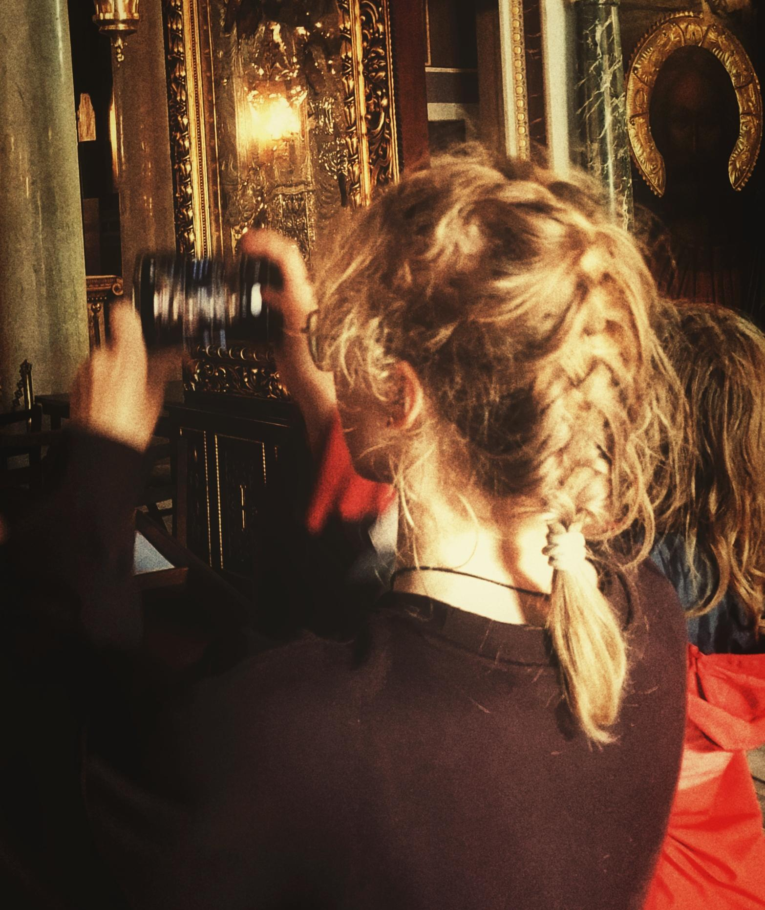

Über mich
Maja.js
const developer = {
name: "Maja Piotrowska",
age: 17,
role: "Angehende Informatikerin EFZ",
base: "Baden",
stack: ["C#", "SQL", "HTML", "CSS", "JS"],
passion: "Probleme lösen und kreative Projekte entwickeln"
};
Meine Projekte
TicTacToe
Meine ersten Projekte mit C#. Hier habe ich mein Grundwissen angewendet und ein TicTacToe-Spiel programmiert.
Erdbeerschoggi Spiel
Mein zweites Projekt (auch mit C#), bei dem ich zum ersten Mal mit einer Mitschülerin zusammengearbeitet habe.
Essensgenerator mit Winforms
Nach dem Kennenlernen von Winform, erstellte ich einen Essensgenerator, der mir immer zwei Gerichte generiert.
Cat Facts Website
Nach dem Kennenlernen von Javascript, erstellte ich eine Webseite die täglich einen neuen Cat Fact anzeigt.
Wertpapier-Portfolio
Ein Gruppenprojekt an der IMS. Wir haben eine C#-Konsolenanwendung entwickelt, mit der man ein eigenes Wertpapierportfolio verwalten kann.
Lebenslauf
Hier kommt später noch mein CV, sobald ich es fertiggestellt habe.